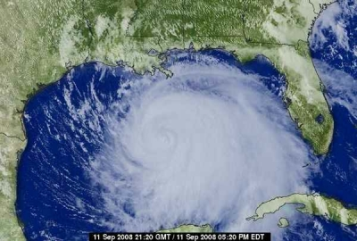
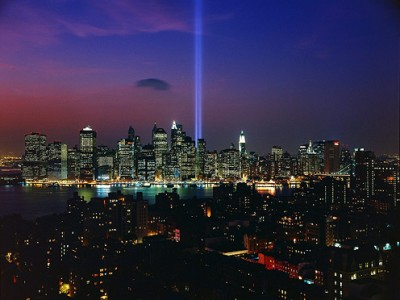
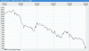

2008 Schedule/Results

Week: 1 2 3 4 5 6 7 8 9 10 11 12 13 14 15 16 17
| Weekly/Yearly Honors | |
|---|---|
| * | |
| * | Most points in a game (year) |
| * | Fewest points in a game (year) |
| * | Most lopsided victory (year) |
| Week 1 NFL Schedule |
|||
|---|---|---|---|
| Purple Helmeted Soldiers of Love | 33 | Kentucky Head Hunters | 23 |
| Chizik's Chumps* | 59 | Ball Busters | 30 |
| Itchy Tortugas | 28 | Beer 'n Broads | 48 |
| Da'renegades | 42 | Gonna Git Spanked | 25 |
| Cleveland Steamers | 21 | Horny Toads | 13 |
|
The Purple Helmeted Soldiers of Love abscise the Kentucky Head Hunters 33-23 in Phallic Bowl '08 - the battle of ATM Bowl virgins with penis-oriented team names (a.k.a talk the talk, don't walk the walk). The Soldiers get punk'd passing as the Marques de Santonio duet combines for 45 receiving yards while Eli throws no touchdowns, but the ground game gains 80/2 from Marion, 76/1 from Marshawn and -1/1 from Eli - imagine what he could do with positive yardage. The Hunters try for the win with two from Big Ben, but the clock strikes twelve for the rest of the team as Reggie catches the only other touchdown while Greg and LaDainian come close to 100 yards. The Soldiers savor the flavor of their M&M backfield but hope their receivers don't turn out to be suckers - all six totalled 95/0 - while the rookies in the Hunters' backfield far outclass the veterans, but that should have been expected as LT's preseason tune-up is Weeks 1-4 and Ricky ... well, no need to rehash that issue. Chizik's Chumps bruise the Ball Busters 59-30. The Chumps leave nothing to chance as almost everyone and everything scores at least six - except Laurence and, of course the owner, who apparently stopped at two a long time ago - led by Brees blowing away the TB D with 343/3, Westbrook's TD by air and TD by ground, touchdown catches from both receivers - Williams on only two receptions, Chambers one - and a TD and safety from da Bears. The Busters come off as airheads at the draft as all points are attained through the air - two passing touchdowns from Cutler, a touchdown catch each from Fitzgerald and Cotchery and four Kaeding kicks for six. Right out of the gate the Chumps have issues controlling their Johnsons as one changes names while another changes teams - it's so disgusting, one team member is considering quitting football - while the Busters feel soulless despite having the O'Jays on the roster - three J's (Jackson, Jones-Drew and Jacksonville) that score O. Beer 'n Broads cook the Itchy Tortugas 48-28. The Broads let their consistently perverted side shine through as A Johnson (112/0) finds a Bush (112/1 receiving) covered in Moss (116/1) that must have McNabbed (361/3) an STD - and everyone thought Captain Kirk was the only guy who liked 'em green. The Tortugas must be hearing The Sound of Music echo in their head as the only thing the team is good for is an afternoon (PM = Peyton Manning = 257/1) on the mountain (MT = Michael Turner = 220/2) - the rest of the troupe is poop. The Broads are betting on a good season even though Braylon may be well on his way to losing his bet with Michael Phelps while the Tortugas, with Chad dangling at the top of the QB pile, may put a new twist on their old routine - Turner and the Five Turds? Da'renegades drub Gonna Git Spanked 42-25. The Renegades are blanketed by blanks as Brady is broken in less than half a quarter and Calvin scores no touchdowns on 107 yards while Torry scores the same on 98 yards less, but the owner unbuttons his wee Willie and, for a change, the lil' fella comes to play - 138 yards rushing and three touchdowns, exactly 150% of last year's total. The Spanked's only touchdown is a double-whammy - Romo to T.O. - but unless there's a rule in place that triples the points for such plays, it's way too little, just like the number of touchdowns put on the board by Earnest and Brandon after a combined 207 yards rushing. The Renegades start off undefeated but are mentally defeated after another first-round bust, as Brady looks to score oh ... about 52 touchdowns less than last year, while the Spanked get bent over as they carry over the momentum of last year's season-ending four-game losing streak to this year. The Cleveland Steamers erotize the Horny Toads 21-13. The Steamers may well have topped out in the twenties as top quarterback Derek only throws for 114/1, top receiver Plaxico catches 133 yards - good for four points this year (thank goodness for the new rule that the owner voted against) - and top back Joseph leaves early with 44 yards rushing and a bruised brain. The Toads are happy with a TD from AP - to go along with 103 yards rushing - but back him up with absolutely nothing as Palmer is calmed (99/0), Housh is hushed (44/0), Marv is starved (76/0) and Larry is nary (74/0). The Steamers may have set the tone for the year scoring-wise on opening night, when two of their top four only tally three points, and injury-wise in Indy, when both Colts bolt early, while the Toads must ponder the following - what do Tom Brady and Carson Palmer have in common? Nothing really, other than they'll both throw zero touchdowns this year. Batten down and take care this weekend...  |
|||
{kind=link}
| Week 2 NFL Schedule |
|||
|---|---|---|---|
| Purple Helmeted Soldiers of Love | 49 | Ball Busters | 53 |
| Kentucky Head Hunters | 30 | Itchy Tortugas | 22 |
| Chizik's Chumps | 48 | Cleveland Steamers | 54 |
| Da'renegades* | 65 | Horny Toads | 22 |
| Gonna Git Spanked | 46 | Beer 'n Broads | 25 |
|
September 11 It's been seven years. In tribute, the Tribute in Light from September 11, 2008:  The Ball Busters behead the Purple Helmeted Soldiers of Love 53-49. The Balls trot out a trio of turds as SJax runs for only 53 yards and MoJo 17 - although the latter does stumble into the end zone once - and Cotch catches 20, but Cutler carves the Chargers into cutlets with 350/4 and the team holds on despite holding its collective breath when an ex-Buster for the last two years makes a late Monday night charge. The Helmets are the anti-Busters backfield-wise as the M&Ms repeat last week's performances with MB3 scoring twice and Beast Mode once while Eli throws for three more than he did last week - in other words, three - but Holmes is a hole again and new pickup Eddie is a Royal bust until 24 seconds to go in the game. The Balls win even with the woes of their stud runners' offensive lines - their #1 pick doesn't have one and their #2 lost 60% of his Week 1 - while the Helmets come ... close, but no cigar as their big backs continue to put up lots of points while their mini-mite receivers (5'10" 182lb wet and 5'11" 192lb sopping) not so much.
The Kentucky Head Hunters calm the Itchy Tortugas 30-22. With
Forte falling a bit short (92/0) and LT falling
LoTs short (26/0), the Heads do damage through the
air as Roethlisberger and Wayne register touchdowns and Jennings
167 receiving yards, but they trail 22-17 going into Monday night
until Akers ends the suspense early with two first-quarter field
goals. The Itchies stink to high heaven as Turner plunges back
to Earth (42/0) while Grant (20/0) and Edwards (32/0) never left,
so all that's left is Peyton's pedestrian 311/1, Ward's 59/1
reward and Josh Brown's seven kicking points (a.k.a. THE St.
Louis offense). The Heads sit one veteran - a stone pawn - in
favor of a rook and might do well to sit another vet - the
checked king (toe checked, knee checked, etc.) for another while
the winless Itchies, sucking only slightly less than the winless
Horny Toads, have already turned to the free agent scrap pile to
try and rebuild a winner (note to owner: you can't mask the smell
of
The Cleveland Steamers dump Chizik's Chumps 54-48. The
Clevelands pile on the points as Rivers notches three touchdowns
(on 377 passing yards - yay!), Portis two and Burress and Addai
one (on 20 rushing yards - boo!) leaving stub-toe Antonio as the
only bro' not to sco'. The Chiziks almost match their opponents
Da'renegades execute the Horny Toads 65-22. The Gades go gonzo as Megatron (129/2) and Megacriminal (166/1) catch well and Warner - the longtime bane of the owner's existence - torches the owner's favorite NFL team for 361/3 - hurts so good - while Gore bores a touchdown and lil' Willie remains hard (105 yards rushing) but doesn't penetrate anything. The Hornies pay homage to Hurricane Ike by suffering major power outages everywhere as AP runs for 160 yards and LJ 22 without scoring while Palmer, Houshmandzadeh and Bowe are blanked, so the defense scores the only touchdown and Nick the kick accounts for half of all points. The Gades are tied for the best record by fielding the best offense and defense - not bad for a Bradyless bunch of bums - while there appears to be no O in the Hrny Tads this year as the 22 points actually raises their average by almost five - what a waste of the NFL's leading rusher, has it become AP and the Five APes?
Gonna Git Spanked foam Beer 'n Broads 46-25. The Gits start off
like a Sunday driver in Sun City as Earnest runs for 116/1 but
Brandon, Roddy and Adam can only muster four points between them,
but the 19-13 deficit is quickly erased Monday night with two
|
|||
{kind=link}
| Week 3 NFL Schedule |
|||||||||
|---|---|---|---|---|---|---|---|---|---|
| Purple Helmeted Soldiers of Love | 34 | Da'renegades | 37 | ||||||
| Kentucky Head Hunters | 16 | Chizik's Chumps | 21 | ||||||
| Ball Busters | 39 | Itchy Tortugas | 40 | ||||||
| Gonna Git Spanked | 30 | Cleveland Steamers* | 49 | ||||||
| Horny Toads | 37 | Beer 'n Broads | 31 | ||||||
|
While the status monkey is usually too busy during the regular season to deal with JPG embellishment in tribute to enthralling NFL stories, some are just way too juicy to pass up - especially when it takes two to tell the tale. So, without further ado...
Da'renegades castrate the Purple Helmeted Soldiers of Love 37-34. The runnin' rebels give control to Kitna who almost kills the clan with a quaint 146/1 while Willie (20/0) and Calvin (40/0) don't help, but Frank (130/1) and Brandon (155/1) both hit double digits and the defense rumbles back a fumble. The lavender longfellows are led by their lethal M&M formula as, for the third straight week, they total a trio of touchdowns but Eli gets his on-average one touchdown and Santonio (32/0) and Royal (11/0) go from mini to microscopic. The Renegades somehow find a way to remain undefeated despite benching both Arizonans (two wrong calls) and leaving Ronnie's 113/4 rushing plus a TD pass on the bench (third wrong call) yet win by "wasting" an eleventh-round pick on a defense while the Purples have pieced together a powerful backfield yet are 1-2 - looks like they missed the mark with their receivers, or at least miss their Marques. Chizik's Chumps decapitate the Kentucky Head Hunters 21-16. The psycho cyclones get an amazing 83% of their yardage from Brees who bombs the Broncos with 421/1 while the rest of the team bombs - Brian (12/0), DeAngelo (27/0), Chris (27/1) and Roy (18/0) - good thing the other owner is dumb enough to bench LT. The loco yokels win the yardage battle but lose the war as Forte has to use means (receiving) other than his forte (rushing) to score the team's only touchdown - too bad the owner is dumb enough to bench LT. The Chumps rise to the top out East even with mounting injuries (three backs and two Titans) thanks in part to Chambers insurmountable TD-to-catch ratio of 4/6 while the Kentuckys better refer to the fantasy football bylaws, section 21, paragraph C: "Unless you have a signed copy of his death certificate OR it is his bye week, LaDainian Tomlinson MUST be in your starting lineup."
The Itchy Tortugas escape the Ball Busters 40-39. The talcless
tacos turn the keys over to Turner who burns another inferior
defense for 104/3 - uh-oh, no more Lions or Chiefs on the
schedule - while Peyton and new pickup/vulture Pittman each score
six and Ward (34/0) and Welker (55/0) are weenies. The nad
knockers are neither happy nor gay to be on brokenback mountain
as once again neither back scores - in Sammy's defense, the
Patriots had to abandon the running game at home in the first
half because the Dolphins, The Cleveland Steamers flog Gonna Git Spanked 49-30. The vile piles bring on the backs as Joseph (78/2) and Clinton (68/1) stake the team to a 25-24 lead going into Monday night, then blow things open when Philip tosses his third straight three-touchdown game and Antonio catches two passes and one six. The whipped dips stink as their Cowboy ship sinks when Romo only passes for a single touchdown - NOT to Owens - while whacking the Pack primetime Sunday, so Roddy leads the way with 119/1 followed closely by the defense and Brandon (35/1). The Steam is scalding hot but the team will probably wither up and die when the Rivers runs dry, because Tom Brady he's not, while the Gonnas bow out after the Romo blowout and might be a fright if the right scorers continue to be their White blight - LenDale (49/2) and Sharod. The Horny Toads guzzle Beer 'n Broads 37-31. The fervid frogs walk the waiver wire and get mixed reviews, putting in O'Sullivan (189/2) for O'Nulliman, a.k.a. Palmer (286/1) - thumbs up - and Patten (12/0) for Houshmanbackagain (146/1) - thumbs way down - and get good days out of draftees Julius Jones (140/1) and Bowe (43/1). Swigs 'n pigs get one cup of cholesterol from both their big Macs (196/1 for Nabb, 64/1 for Gahee) while their Bush goes both ways (73/1 on the ground, 75/1 in the air), but Evans and Moss contribute nothing and the team - like the owner - comes up short. The Toads finally win AND manage to score more than in their first two games combined even though they get nothing from their top pick and bench their second, third and fourth picks - who all have their best day of the year - while the Broads are lying at the bottom of the barrel and dealing with the following harsh reality: Evans > Moss, a.k.a. the receiver they dropped last year is better than their top pick this year. |
|||||||||
| Week 4 NFL Schedule |
||||||
|---|---|---|---|---|---|---|
| Purple Helmeted Soldiers of Love | 30 | Horny Toads | 50 | |||
| Kentucky Head Hunters* | 56 | Beer 'n Broads | 25 | |||
| Chizik's Chumps | 31 | Da'renegades | 32 | |||
| Ball Busters | 33 | Gonna Git Spanked | 50 | |||
| Itchy Tortugas | 53 | Cleveland Steamers | 43 | |||
|
While the status monkey is usually too busy during the regular season to deal with JPG embellishment in tribute to enthralling NFL stories, some are just way too juicy to pass up - especially when it's Ricky-related. So, without further ado...
The Horny Toads devitalize the Purple Helmeted Soldiers of Love 50-30. The Hornies holler blackjack as Patten, Peterson and Taylor all tally 21 receiving yards which, in football of course, are busts - but the backs are beasts as LJ and AP rush for 198/2 and 80/2 while Journeyman T. O'Sullivan and the defense add a touchdown apiece. The Loves are caught in the candy jar when the M&Ms (Marshawn 57/0, Marion 26/0) melt in their hands and not in their mouth, so a receiving touchdown from the young (Holmes) and the old (Bruce) and two passing touchdowns from Mr. Rodgers aren't near 'nuf - too bad the owner didn't opt for a Coles cut sandwich, coulda cured the diarrhea, woulda won the game. The Hornies go from 0-2 to 2-2 thanks to increasing their offensive output every week and should easily continue that trend next week against the Ball Busters while the Loves go from 1-0 to 1-3 and see their chances of making the playoffs dropping faster than the Dow thanks to panicky, idiotic investors. The Kentucky Head Hunters evaporate Beer 'n Broads 56-25. The Hunters dangle a nice pair... of pairs as Tomlinson runs for 106/2 - not bad for a cripple - and Jennings catches 109/2, then the Pittsburgh QB and Pittsburgh D tack on additional punishment Monday night - if only the owner learned to unzip his Johnson, the Heads might be unbeatable. The Beers are starting to realize they're Evans tinkier than last year as 2007-jettison Lee leads the team with a touchdown and two-pointer, followed closely by one Lewis and one McNabb touchdown. The Hunters go from week low score to week high score in one week - the difference, getting LT back into the lineup, a decision more obvious than Clay Aiken's coming out - while the Beers can blame this loss on fear when the owner declares Gus Frerotte the starter and all his sane players run for the hills, leaving behind only the poor performers. Da'renegades fuddle Chizik's Chumps 32-31. The Gades again owe their keisters to Kurt, who turns the ball over more times than Neil Patrick Harris on a date but still throws 472/2 while Brandon bags another touchdown reception and Frank's two-pointer provides the winning points. The Chiz are all Brees while the rest of the team blows as Drew nails the Niners with 363/3, but DeAngelo splits time and Brian does no time so the only other touchdown is caught by Chad on 28 measly yards. The Gades find a way to stay undefeated despite having eight blank stat lines (four byes, four injuries) out of sixteen - somehow the owner pulls the right strings to get 100% from 50% - while the Chiz lose without Westbrook (a.k.a. broken Brian) and now face the harsh reality that their number one back is a Bungle castoff and Lion pickup - in other words, YUCK! Gonna Git Spanked grind the Ball Busters 50-33. It's all aboard the Cowboy express again for the Spanked as Tony tosses 300/3 and Terrell receives 71/1 while Earnest goes to school on the Packers with 111/1 and the Whites - Fattail (13/1) and Shoddy (90/0) - are so-so. The Balls get single scores from a pair of Panthers and... aw, face facts folks - the owner played the wrong quarterback, the wrong running back, the wrong receiver, the wrong kicker - this team is just plain wrong. The Spanked win but better temper their expectations with the fact that they played the Ball Busters AND don't get to play them again - well, at least they own the tiebreaker - while the Balls feel the brunt of a fourth-straight year-high score rained down upon them and, thanks to winning it all last year, must have a target on their backs the size of pre-stapled Star Jones that EVERYONE is hitting. The Itchy Tortugas heat the Cleveland Steamers 53-43. The Itches can barely be heard with closed Mikes (Turner 56/0 and Pittman 36/0) while Vincent (52/0) and Braylon (22/1) whimper in the background, but Favre flings 289 yards and six touchdowns to save the day. The Cleves enjoy an Edgerrin sighting - two touchdowns and a two-pointer on only 29 yards rushing - but the rest of the team is nearly invisible as Philip (180/1) and Antonio (58/1) hook up once and new acquisition Hank's Baskett is empty (10/0) - that's 20¢ a yard for accounting purposes. The Itches somehow manage another victory but better abandon the Brett bandwagon pronto as the ol' geezer just blew 18-years worth all over Arizona and is in for a long refractory period while the Cleves drop their first and perhaps should have kept last year's team name as they get a full facial in Favre's Fountain of You. |
||||||
| Week 5 NFL Schedule |
|||
|---|---|---|---|
| Purple Helmeted Soldiers of Love* | 49 | Kentucky Head Hunters | 29 |
| Chizik's Chumps | 48 | Itchy Tortugas | 38 |
| Ball Busters | 40 | Horny Toads | 37 |
| Da'renegades | 39 | Gonna Git Spanked | 47 |
| Cleveland Steamers | 25 | Beer 'n Broads | 48 |
|
October 9 No scoop this week. Maybe it'll show up this weekend. Maybe not. The status monkey is way too busy panhandling weekdays on the Southeast corner of I-35 and RM 620. Stop by if you have a minute to spare. Or, better yet, a dollar.  October 13 The Purple Helmeted Soldiers of Love efface the Kentucky Head Hunters 49-29. The Soldiers are brought back to their childhood as Mr. Rodgers leads the show with 313 passing yards and three touchdowns while Mr. Bruce, who was a big fan of the hood - Mister Rogers' Neighborhood - back in the 60's, hauls in two touchdown receptions for the first time since, well, Mr. Rogers was broadcasting live. The Heads drown in a bowl of hot, steaming Campbell's poop as Jason (176/0) lays an egg - on which LaDainian (35/0) nests - so touchdown receptions from Wayne, Jennings and Forte - who also adds a touchdown rushing - are it for the week. The Soldiers end the pain of a three-week losing bane and prove that they can win despite an empty bag of M&Ms while the Heads get the top pick yet produce the bottom offense - good thing they have the top-rated defense as a counterbalance.
Chizik's Chumps fry the Itchy Tortugas 47-38. The Chum wheel out
the Williams sisters, uh, brothers, uh, two unrelated guys with
the same last name, and one is good (DeAngelo, 123/2 plus a
receiving touchdown) while one is bad (Roy, 96/0), then Drew,
Chris and da'Bears add touchdowns too. The Tortugas are a joke
as Ryan (83/0) is actually lying in Grant's tomb (269/0 for year)
while DeSean gets more rushing yards (13) than receiving (8) -
good thing he returns a punt all the way or he'd be totally
worthless - so Turner and Ward's single sixes and fluky twin
touchdown tosses from Peyton (thank you Sage Rosenfels!) are it.
The Chum become the only remaining undefeated team - on a
divisional scale - yet remain only one game ahead of the four
other teams in their division while the Tortugas lose but are
doing the best they can with a pseudo-dud from pick one and
definite-duds from picks
The Ball Busters gratify the Horny Toads 40-37. The Busts are a
broken record - of the annoying Celine Dion type - as once again
they deploy the wrong quarterback, wrong running back, wrong
receiver and wrong kicker - fortunately their
Gonna Git Spanked hook Da'renegades 47-39. For the second week in a row the Git get a three-spot from Tony with one of them going Terrell's way, then Brandon throttles Seattle for 136 rushing yards and two touchdowns to finish things off. The Cardinal scoring for the Renegades comes from Warner (250/2) and Rackers (11 points) while Ronnie Brown and Gore chip in single touchdowns, but Calvin Johnson (16/0) and Marshall (25/0) commit the cardinal sin of wasting a starting spot. The Git are giddy that they can bench Roddy (132/1) for Anquan (broken face) and still get away with it against their bitter rival (see League Photo Caption Challenge, entries 6 and 7) while the Renegades' pursuit of perfection lasts a mere 13 games less than the owner's beloved Dolphins' 1972 run and they have a lack of working receivers to thank - and those that are working aren't working well. Beer 'n Broads ice the Cleveland Steamers 48-25. The Broad are all about the big play as Lee catches an 87-yard touchdown reception while Randy tacks on a 66-yarder of his own, Felix scores on a 33-yard rush and Reggie runs back two punts from 71 and 64 yards out. The Steam run well out of the starting gate thanks to Portis (145/1) and Addai (71/1), but are unable to complete the race as Clark (81/0) is in park and Gates (12/0) never gets started. The Broad get back on the winning track after three weeks off thanks to the team's big-play tribute to their big owner - and the inability of his beloved Vikings to cover a freakin' punt - while the Steam take all the steam out of their 3-0 start with a two-game losing streak but may have been misleading folks all along as they are the only team over .500 who doesn't have more points for than points against. Editor's Note: Parity is king! No undefeated teams, no winless teams. One team is 4-1 (*cough* fluke *cough*) while everyone else is 3-2 or 2-3. All three 1-3 teams won this week and all of this week's winners scored in the 40's. |
|||
{kind=link}
| Week 6 NFL Schedule |
|||
|---|---|---|---|
| Purple Helmeted Soldiers of Love | 36 | Itchy Tortugas | 20 |
| Kentucky Head Hunters | 37 | Gonna Git Spanked | 40 |
| Chizik's Chumps | 24 | Ball Busters | 33 |
| Da'renegades | 41 | Beer 'n Broads | 34 |
| Cleveland Steamers** | 55 | Horny Toads | 9 |
|
The Purple Helmeted Soldiers of Love flake the Itchy Tortugas 36-20. The mauve muff missiles receive good news and bad news in receiving - the good is both backs have more receiving yards than rushing, the bad is, of all four starters receiving, only Barber's 128/1 nets any points - so Rodgers' three touchdowns make up half the scoring. The chafing chips bop to the beat of the Jackson 2 as Vincent catches 134/1 while DeSean comes up two yards short of 100 receiving, but the rest of the team marches to the beat of a different drummer as Favre only tosses one touchdown while Grant rushes for 90 yards and Sproles 90% less. The Helmeted are back to .500 and getting fat off the fat of the league, pounding two 2-4 teams in a row and getting a chance to pound another next week, while the Itchies lose again but definitely deserve this one for sitting their top-two picks (Manning 271/3 and Edwards 154/1). Gonna Git Spanked guillotine the Kentucky Head Hunters 40-37. The red rumps experience déjà vu from last week as a broken Boldin starts over a ready Roddy (112/1) and Romo throws three touchdown passes, but because none go to T.O. the suspense lasts until Monday Night when Jacobs runs in the winning six. The country cranium chasers are set at receiver as Wayne (118/1) and Jennings (84/1) behave as normal while Forte rushes for a touchdown, but unfortunately Campbell (208/0) and Tomlinson (74/0) also behave as normal so the only big boost is Akers' eight boots for 16 points. The Gonna's owner better watch his back - or backside, at least - as his refusal to bench Boldin despite a fractured face may be an expression of manlove that makes Warner overly jealous while the Kentucky lose a close one and hopefully realize the importance of drafting a real backup quarterback instead of a second team defense as lil' Jason goes 384/0 in big Ben's absences.
The Ball Busters hang Chizik's Chumps 33-24. The cojones
crackers finally order up their 260lb big Mac and he throws down
a whopper... Da'renegades imbibe Beer 'n Broads 41-34. The fortunate fugitives almost score a clean sweep in scoring as Kurt (236/2), Frank (101/1), Ronnie (50/1), Calvin (85/1), Neil (one FG and three PATs) and the Minnie D (safety) all show some relevance - only Brandon misses out on the fun, and by a mere two yards. Brews 'n flooze have a good pair and a bad pair as Reggie (27/1, 40/1) and Andre (178/1) show up while Felix (22/0) and Randy (26/0) blow up, then the Gus bus runs out of gas four yards and a touchdown short of the win. The Gade keep on finding ways to win without a Tom-tom or Willie thanks to the top offense, which makes sense since other teams are reluctant to tackle eunuchs, while the Beer keep on losing despite the presence of a hot Bush, which also makes sense since other teams prefer to jump that over and over again.
The Cleveland Steamers jerk the Horny Toads 55-9. The hot heaps
repulse Republicans as Clinton (129/2) continues to dominate
Washington while Plaxico returns from his
|
|||
| Week 7 NFL Schedule |
|||
|---|---|---|---|
| Purple Helmeted Soldiers of Love | 33 | Beer 'n Broads | 39 |
| Kentucky Head Hunters | 22 | Da'renegades | 39 |
| Chizik's Chumps | 28 | Gonna Git Spanked | 20 |
| Ball Busters* | 46 | Cleveland Steamers | 40 |
| Itchy Tortugas | 34 | Horny Toads | 35 |
|
Beer 'n Broads geld the Purple Helmeted Soldiers of Love 39-33. The Broads watch in horror as their Bush breaks and Jamal jams, leading to a 33-16 deficit going into Monday night, but Randy takes advantage of Bailey's ailing to double his touchdown total for the season while Gostkowski is good for 11 points to finish off the comeback. The Purples are happy to get their M&Ms back in time for Halloween as Barber (100/1) and Lynch (70/1) do their usual thang, but Coles (51/0) and Colston (0/0) are cold so when Rodgers only throws for one touchdown against the hapless Viqueen secondary, all is lost. The Broads' Patriotic rally saves them from falling into last place by themselves in the West, a full four games behind Da'renegades - instead they are tied for last and only three games out - while the Purples get a bad case of whiskey dick from an overdose of Beers and now get to put their nuts on the line next week against the Ball Busters. Da'renegades hound the Kentucky Head Hunters 39-22. The Renegades transform their youngest Johnson into Megatron, and he rips off 154/1 on just two catches and a two-pointer to boot, but the only other touchdown comes from Jeff Gaycia as Gore runs for 11/0 and T Jones almost 15 times more. The Hunters can't catch a break - or a touchdown - as typical studs Jennings (32/0) and Wayne (24/0) report in as duds while Forte (56/1) and Tomlinson (41/0) don't run for much either, so Roethlisberger's two touchdown passes are over half the show. The Renegades are running wild and running away with the West as they sport the league's top offense, top defense, and oldest Johnson while the Hunters are suffering through DTs - Depletion of Tomlinson - and many are starting to wonder when they're going to reveal the league's youngest Johnson. Chizik's Chumps iron Gonna Git Spanked 28-20. The Chumps are down to the bare minimum, yet the minimum prevails as Chad and DeAngelo catch their second touchdown passes on the season while Derrick catches his first, then Mason kicks in a dime. The Spankeds claim to be too busy to turn in a lineup so Romo and Boldin contribute absolutely nothing while Owens (31/0) and Vinatieri (2 PATs) don't fare much better, so Jacobs (69/2) and Graham (52/1) are an amazing 90% of the offense. For the Chumps the choice is easy with only one available QB, two available RBs, two available WRs, two available PKs and one DT on the roster - good thing they play a team with only five active players - while the Spankeds may be abandoning all hope after the owner abandons them for the third straight week, so it's no surprise they play the wrong QB, RB, WR and PK which results in a miserable 36% scoring efficiency. The Ball Busters jettison the Cleveland Steamers 46-40. The Busters believe in Steves and they achieve as Jackson triples his year-to-date touchdown total with a 160/3 day, Smith catches 122/1 and Slaton rushes for 80/1, but the rest of the team is on medical leave as Jerricho (0/0) is a kick in the Cotchery while Cutler (injured first play) is cut down Monday night, although he does manage to wing the winner in garbage time. The Steamers flow along as Rivers throws for two touchdowns while Coach Spanky Janky matches those 12 points with a 175/1 day, but the pickins are slim after that as Burress gets a mere 24/1 while Gates and new-acquisition Dunn go scoreless, the latter with assistance from the owner's Kiss of Death. The Busters register their third consecutive win in lethargic fashion because their MoJo goes bye while the Steamers management makes a miserable call by replacing Addai with Warrick instead of the logical choice - Addai's replacement (Dominic, two touchdowns) or even Fast Willie's (Mewelde, three touchdowns). The Horny Toads kill the Itchy Tortugas 35-34. The Toads play with a suspended Johnson while Bowe (86/0) and Harrison (11/0) are up in the air too, but Peterson Bears down with yet another typical Chicago showing of 121 yards rushing and two touchdowns and the Green Bay defense runs back a pair of Peyton picks. The Tortugas rejoice as Ryan comes alive to finally Grant them a touchdown - and 105 yards rushing - but Manning (229/0) is no longer the man while Edwards can only convert a two-point conversion, then Michael is the pits Monday night and all hope vanishes from sight. The Toads win with the worst offense because of their defense and have their opponent to thank twofold as Peyton throws two touchdowns to their defense and none to his offense while the Tortugas change their lineup more often than Amy Winehouse enters rehab and still can't field a winner, although his vote for Ward on the third ballot does make the outcome much closer when he scores a pile-it-on TD after the two-minute warning in the fourth quarter. |
|||
{kind=link}
| Week 8 NFL Schedule |
|||
|---|---|---|---|
| Purple Helmeted Soldiers of Love | 20 | Ball Busters | 48 |
| Kentucky Head Hunters | 30 | Chizik's Chumps* | 56 |
| Itchy Tortugas | 24 | Beer 'n Broads | 36 |
| Da'renegades | 37 | Horny Toads | 16 |
| Gonna Git Spanked | 37 | Cleveland Steamers | 42 |
|
The Ball Busters husk the Purple Helmeted Soldiers of Love 48-20
in the battle of teams employing the latest drug suspects (a.k.a
juiced Deuce vs herbed Holmes). The Balls sing nothing could be
finer than to pass in Carolina in the morning as Delhomme finds
Smith twice for third-quarter scores and 117 yards overall while
on the other side of the field Fitzgerald catches 115, then
Slaton adds a rushing touchdown and Kaeding (12 points) kicks
lights out in London. The Loves have some tough matchups and it
shows as E Manning musters a late touchdown toss while on the
other side of the field Reed connects on a couple PATs, then
Marion (71/0) is barbarized and Colston (56/0) is Charged with
negligence so Coles (64/1) and Lynch (61/1) are the only other
contributors. The Balls win their fourth straight and are
behaving eerily similar to last year when they started 1-3 and
then went on a tear to win it all - too bad
Chizik's Chumps irk the Kentucky Head Hunters 56-30. The Chiziks
welcome back Westbrook and he responds with a career-high 167
yards rushing to go along with two touchdowns, and when Brees
tacks on 339/3 - along with a very rare Beer 'n Broads juice the Itchy Tortugas 36-24. The Beers almost pass out as they get no touchdowns out of the pass - although both receivers crack 100 yards - but recover in time to enjoy a drunken rush as Jamal, Willis and Donovan all rush for touchdowns while Stephen chips in 11. The Itches must have LT-envy as they start his current (Sproles, 6/0) and former (Turner, 58/0) backups but neither copy comes close to the original, and when both receivers boycott scoring the torch is passed to Brett (290/2) but he is unable to shoot-up the Chiefs like most generals have in recent history. After winning two in a row, the Beers are afloat in the middle of the pack out West trying to capture Da'renegades while the Itches continue to submit lineups a few minutes apart and the owner's indecisiveness reflects on the team, which looks to have only a few minutes left in their playoff run for 2008 as they and first place move farther apart. Da'renegades kiss the Horny Toads 37-16. The Gades made a grade-A decision by drafting Warner yet again, as Kurt hurts the Panthers with 381/2 while one of the Jones (Thomas) and one of the Johnsons (Calvin) score one touchdown apiece, so while Gore comes close and Holt is horrid they don't bring the team down. The Hornies know they are in trouble when J.T. is pulled at halftime, Huggy Bear's boy leads the team in rushing with 24 yards, and TJ (a receiver) gets as many rushing yards as Julius (a back) with nine, so the defense scores the only touchdown. The Gades improve to 7-1 thanks mainly to Warner, who continues to perform at a high level despite his rocky relationship with the owner while the Hornies play under protest after their beleaguered owner calls them a "big pile of dog crap" and end up stinking on purpose, thereby becoming the proud owners of the three lowest scores (16, 13 and 9) for the year. The Cleveland Steamers lash Gonna Git Spanked 42-37 in the battle of teams with all key All-AFFL stars at the halfway point. The Clevelands field the #1 QB (Philip Rivers - WTF?) and he yields 341 yards passing and three touchdowns while the #2 RB (Clinton Portis - WTF?!) rushes for 126 yards, but after Edge (17/0) and Plax (15/0) are waxed it's up to Bironas (11 points) to maintain the momentum Monday night. The Gits got the #1 RB (LenDale White - WTF?!?) who runs for two touchdowns on a mere 13 yards, the #1 WR (Anquan Boldin - WTF?!?!) who is happy to be back bending over for Warner while catching a nice pair of touchdowns, and the #2 WR (Santana Moss - WTF?!?!?) who catches 140/1 and runs a punt back for a touchdown... from the bench. The Clevelands have the second-best record with the second-best offense, which just goes to show that anything can happen when the average Joes above are the top fantasy players, while the Gits deserve this defeat for:
|
|||
| Week 9 NFL Schedule |
|||
|---|---|---|---|
| Purple Helmeted Soldiers of Love | 18 | Chizik's Chumps | 20 |
| Kentucky Head Hunters | 32 | Itchy Tortugas | 29 |
| Ball Busters | 26 | Horny Toads | 30 |
| Da'renegades* | 43 | Cleveland Steamers | 13 |
| Gonna Git Spanked | 36 | Beer 'n Broads | 36 |
|
Chizik's Chumps impound the Purple Helmeted Soldiers of Love 20-18. Gene's queens play true to form as Rudi (19/0), Brian (61/0) and Roy (28/0) all go girlie while Drew gets the starting nod despite relaxing on a Caribbean beach enjoying the tropical Brees, but a career day from the old Oiler Derrick (136/1) is just enough to go along with the other ten from Mason. The plum pants pythons are plain putrid as Barber (54/0), upset-tummy Lynch (16/0), Coles (40/0) and newbie Avery (26/0) are almost invisible so, just like their opponent, all offense comes from one player (Rodgers' 314/1) matched by the kicker. The Chumps remain cheap with a lame late attempt to pick up a quarterback and yet the fantasy football gods still smile upon them as they win another they shouldn't have while the Soldiers should be ashamed for not being able to beat something without a head, but can pat themselves on the back for wasting $2 on another royal rookie bust while either of the other two receivers on the bench - and already on the team - would have won the game. The Kentucky Head Hunters jostle the Itchy Tortugas 32-29. The backwoods brow bonkers finally get both rookie backs rolling with Forte's 126/0 and Johnson's 89/1, but the real stud is Akers and his four FG, two PAT day... that is, until he is upstaged by Roethlisberger, who sneaks one in Monday night before sneaking out of the game. The bad burritos are almost all Peyton - which is NOT a good thing this year - as he is half the offense with 254/2 and a two-point conversion, so the defense provides a three-point lead with a pick-six but the team receives no aWard for playing Hines Monday night. The Kentuckys capture their first victory in over a month and step on and over their opponent on their way out of the division cellar while the Torts' fifth-straight loss leaves them with the worst record in the league as the owner is getting into the habit of spending $4 a week ... on transactions, trying to find a cure for his drafting illness. The Horny Toads kick the Ball Busters 30-26. The amorous amphibians score the initial two touchdowns Sunday within the first seven minutes and never look back and, while neither (Peterson 139/1 and Bowe 29/1) score again, Bulger rises from the ashes like a phoenix to leave his Marc on the team from Phoenix with 186 passing yards and two touchdowns. The nut crackers welcome back their top pick and Steven stinks to high heaven as he's on the field every third play or so and drops an easy pass in the end zone, so Cutler's 307/2 and a lucky Jones-Drew touchdown run are all the O has to offer. The Toads are managing to hang around the playoff picture despite the awfulest offense and are just one game out of second despite being in last while the Busters watch their four-game winning streak go down in flames thanks to a phantom pass interference call against Marshall that takes away a 77-yard touchdown pass - and performance point - for Cutler and a PAT for Prater, then endure monkey woofing after his Dolphins beat her Broncos in that same game. Da'renegades lump the Cleveland Steamers 43-13. The mighty mutineers are in a zone as Arizona produces over half the offense with Warner's 342/2 and Rackers ten points while Ronnie Brown, Calvin Johnson and Thomas Jones all add touchdowns of their own. The brown mounds suffer a blackout as Garrard, Addai, Portis, Burress and Clark all back out of scoring, so the kicker (Scobee) leads the way with seven points while the defense (Arizona) brings up the rear with six. The Renegades are running away with the West and the league with a three-game divisional lead and two-game homefield advantage lead - see what the best offense and defense can do, along with draft advice from a 12-year-old boy - while the Steamers look lethargic without a charge - or Charger - in their lineup and may experience even more lethargicism in the future now that their third and fifth picks have both been benched for younger, better talent. Gonna Git Spanked match Beer 'n Broads 36-36. The bruised bottoms are happy knowin' Owens (36/1) isn't a phony without Tony while Boldin (85/1) gets his usual end zone attention from Kurt, then Jacobs (117/1) runs wild while Trent Edwards (289/1) does okay but not good enough. Coors 'n whores are merry when McNabb manhandles the Seattle nondefense with 349/2 while Andre Johnson racks up another touchdown reception, but after Lewis and Moss don't score and McGahee doesn't play it's a Dallas defensive touchdown - their first - that earns the tie. The Gonnas go above and beyond to keep an even keel as they become the first team in league history to be .500 two weeks in a row AND have equal PF and PA for the season two weeks in a row while the Broads wonder what would have happened had Willis not gotten a run in his stockings and skipped running, which leaves the team hating on him as much as the Ball Busters are hating on SJax. |
|||
| Week 10 NFL Schedule |
|||
|---|---|---|---|
| Purple Helmeted Soldiers of Love* | 6 | Itchy Tortugas | 27 |
| Kentucky Head Hunters | 16 | Ball Busters* | 61 |
| Chizik's Chumps | 44 | Cleveland Steamers | 30 |
| Da'renegades | 48 | Beer 'n Broads | 32 |
| Gonna Git Spanked | 52 | Horny Toads | 48 |
|
The Itchy Tortugas jiggle the Purple Helmeted Soldiers of Love 27-6. The Itchies get whiplash from their surprised reaction at seeing the Jets amass 47 points while Favre only manages 167/1, so it's up to Turner and new-acquisition Ben Jarvis Green Ellis Smith Whatever to pull the wagon and they pull through with 96/1 and 105/1, respectively. The Helmets soil themselves when Rodgers (142/0) has problems airing it out, Avery (29/0) dons his invisibility cloak again, Hightower (22/0) is timid under the Monday night lights and Lynch (46/0) continues to run like he's stuck in a marsh, so a 140-yard receiving game from Colston and a pair of PATs are it. The Itchies continue to find ways to win by piecing together unwanted, spare and cast-off parts from other teams - perhaps the owner should change his name to Frank M. Stein - and would have fared even better playing two other pickups (Royal 164/1 and Walter (85/1) over the crap he drafted while the Helmets continue their losing ways and let the Horny Toads off the hook - thrice - by setting a new standard in low with the year's lowest score. The Ball Busters knock the Kentucky Head Hunters 61-16. The Ball excel at quarters - just like the owner and her hubby back in college - as Jay rocks Detroit city with three fourth-quarter passing touchdowns, Maurice rocks Cleveland with three second-quarter rushing touchdowns and Deuce escapes the French Quarter to haul in a receiving touchdown. The Hunter are cornered unarmed as Ben's shoulder soreness shows with 284/0, LaDainian runs for 78/0 against the worst run defense and Chris 8/0 against a far better one while Greg gets a Minnesota meltdown with 37/0, so the only thing that prevents the most lopsided loss on the year is a fluky Wayne touchdown reception off a big-time deflected pass. The Ball win but lose their ticket to ride the Torain train as Ryan looks really good for 1½ quarters with 68/1 but becomes the second rookie back to go on I-R for the Busters during their first NFL start while the Hunter best release the coon dogs and try to track down Tomlinson's talent as the top overall pick is only third-best on the team - behind two rookies. Chizik's Chumps lay the Cleveland Steamers 44-30. The Chizik ride the hot Brees blowing through Atlanta to 422 passing yards and two touchdowns, yet still need help when Westbrook (26/0) just plain blows - riding to the rescue are DeAngelo Williams (140/1) and Gage (47/1) - WHO?!?! These aren't has-beens, they're never-beens! The Cleveland steam through San Diego again as Rivers throws 316/2 while Gates catches 66/1 of those, but the rest of the team runs out of steam as Addai (34/0), James (4/0) and Burress (17/1) do little to prove their manhood. The Chizik continue to make the most of the least as, thanks to byes, injuries and Vinsanity's insanity, Rudi and his rampaging 4/0 is the only non-kicker on the bench while the Cleveland do what they can with what they got as there are no backs on the bench and the other receiving choices registered 24, 7 and 6... yards.
Da'renegades muddle Beer 'n Broads 48-32. The Gade save the best
for last as a sullen Sunday with only Ronnie Brown and Marshall
touchdowns and two safeties leave them facing a 32-16
deficit, but Warner (328/3) and Rackers (three FGs, two PATs)
match their opponent's point total on Monday night while Gore
comes up one yard short of adding even more. The Beer come out
flat desipte a jamming backfield as Randy (53/0), Lee (22/0) and
Jamaal (8/0) don't amount to anything while Jamal (60/1) is less
than successful against the Denver D, so Donovan's Sunday soiree
(194/3) is over half the team's production. The Gade better don
the leather and chains as their domination in the West is getting
painful for the other four division denizens who are at least
3½ games back with five to play while the Beer won't have to
lose sleep about sending in a last minute lineup change that sits
McGahee (112/2) in favor of Gonna Git Spanked nail the Horny Toads 52-48 in Incomplete Lineup Bowl 2008 - The Battle Of Owner Oversights. The Spanked finally pay attention to their roster and decide to sit Edwards (120/1) in favor of Schaub (broken), but the lawfirm of Jacobs (126/2), White (68/1) and White (14/1) win their case and Boldin (92/2) gets his usual amorous attention from Warner, including the clincher with less than five minutes to play Monday. The Horny don't pay attention to their roster and get caught with their pants down and no ... kicker ... in sight, but still hang tough as Ryan (248/2), Peterson (192/1) and Moore (57/2) all hang twelve while Muhammad and the defense total twelve. The owners of the Spanked and the Horny better pay more attention to their rosters and less attention to playing Mobsters lest their players refuse to fight while their aspirations for the season get whacked. |
|||
| Week 11 NFL Schedule |
|||
|---|---|---|---|
| Purple Helmeted Soldiers of Love | 33 | Cleveland Steamers | 21 |
| Kentucky Head Hunters | 24 | Horny Toads | 30 |
| Chizik's Chumps* | 50 | Beer 'n Broads | 26 |
| Ball Busters | 35 | Da'renegades | 48 |
| Itchy Tortugas | 49 | Gonna Git Spanked | 44 |
|
The Purple Helmeted Soldiers of Love kiln the Cleveland Steamers 33-21. The Sold are erected as their backfield is resurrected when Barber cuts 114/1 rushing while Lynch hangs 119/0 rushing and adds a receiving touchdown, then Rodgers throws two touchdown passes to cover the terrible thirties sound emitted by C+C Music Factory in receiving. The Steam are boiling mad when Rivers (159/0) hits a new low in the Pittsburgh snow - taking Gates (10/0) with him - and hurtin' Clinton (68/0) runs like he needs a splint on, so 105 rushing yards and two total touchdowns from Addai and a Bironas six-pack are it. The Sold need to step in a big, steamy pile o' poo to rid themselves of their four-game losing streak but still have the stench of a miserable season hanging over their heads while the Steam pick the wrong time of the season to roll over and play dead as their three-game losing streak has them sitting in contention for one bowl ... that's about to be flushed. The Horny Toads lop the Kentucky Head Hunters 30-24 in Cheerios Bowl II - The Battle Of The Worst O's. The Horn receive an early Christmas gift as both receivers rip open the defense for big days - Dwayne 53/2 and TJ 149/1 - and the Green Bay defense scores again to cover Aaron's okay day (250/0) as well as Adrian's somewhat positive day (85/0) and Mewelde's totally negative one (-1/0). The Hunt find some of the things they are looking for as Tomlinson (57/1) and Jennings (64/1) both return to the scoring column after a long absence, but everyone else goes absent as Roethlisberger, Forte and Wayne all avoid the end zone. The Horn leave the table stuffed as they continue to feast on the East with 4-1 record - too bad they have the worst divisional record (1-5) in the league - while the Hunt have Scott Green and the other retarded referees to thank for taking a tie away when they overturn a Pittsburgh defensive touchdown on an invalid call - don't feel bad, Gregg, $2 pales in comparison to the untold millions lost in Vegas. Chizik's Chumps malt Beer 'n Broads 50-26. The Chum throw out the usual Chad (34/0) and unusual Brian (60/0) for shark bait, but the big catch is a net full of specimens thought to be extinct for years - a Justingagen (147/2) and a Deangelowilliamsius (120/2). The Bro are a no-go as Gostkowski is the stud of the week with three FGs and two PATs - McNabb does manage one passing touchdown on 339 yards while Moss adds another on only 26 receiving yards, but McGahee (18/0), Lewis (65/0) and Andre Johnson (55/0) should have stayed in bed. The Chum win their fifth straight but bolster themselves by picking on lesser competition as they are 1-2 against teams with winning records and 7-1 against losers - good thing their last five opponents fall into the latter category - while the Bro stumble out of the bar and into last place out West yet still hold on to a glimmer of hope because they are really only one game out of second. Da'renegades nip the Ball Busters 48-35 in Cheerios Bowl III - The Battle Of The Best O's. The Rene give thanks that Frank is in the lineup for his one good game a year - 106 yards and two touchdowns by ground - then pile on the spanks when Kurt (395/1) and Neil (14 points) both hit double digits again while Calvin Johnson catches a pass from the reincarnation of Culpepper. The Bust lust for a passing game as Jay (216/1) can't cut the mustard against the flatulating Falcons while neither Larry (151/0) nor Stevonne (59/0) can find the end zone, so Maurice (66/2) and Deuce (18/1) are the brunt of the offense. The Rene win their sixth straight and clinch the West going away, but the other owners are still keeping a wary eye on the Boz because he appears to have a fetish for men with big ... arms, as he now has seven QBs on the roster, while the Bust best find winning a must if they lust to stay at the front of the wildcard hunt. The Itchy Tortugas obturate Gonna Git Spanked 49-44. The Tort celebrate as Turner finally gets to burn another bad defense, dropping 81/2 on the Broncos, while Grant goes off against the ghost of a good defense as he tears da'Bears for 145/1, then Peyton adds 320/2 and Rian holds off the opponents with a Monday-night nine. The Spank get a boost from bulldozer Brandon's 73/2, but Tony's return is mostly phony with 198/1 while Anquan (186/0), Roddy (102/0) and LenDale (52/0) all post decent yardage without scoring, yet a Brown kicker takes on the 40-27 deficit Monday night and almost conquers it with five FGs and two PATs. The Tort double their pleasure by doubling their win total over the last two weeks but are still likely to find themselves doubled over when they look back on this season while the Spank hold on to a tenuous half-game lead for the final wildcard spot and face three games in a row against teams in their rear-view. |
|||
| Week 12 NFL Schedule |
|||
|---|---|---|---|
| Purple Helmeted Soldiers of Love | 47 | Gonna Git Spanked | 46 |
| Kentucky Head Hunters | 38 | Cleveland Steamers | 23 |
| Chizik's Chumps | 41 | Horny Toads | 27 |
| Ball Busters | 18 | Beer 'n Broads | 37 |
| Itchy Tortugas* | 63 | Da'renegades | 33 |
|
The Purple Helmeted Soldiers of Love lacerate Gonna Git Spanked 47-46. The one-eyed anaconda army get single touchdowns from New Yorkers Lynch and Coles to trail 46-21 after the weekend's action, but Monday night is a different story as top receiver Colston scores his first touchdown of the year and Rodgers does a little bit of everything with two passing touchdowns, one rushing and the clincher - a two-point conversion early in the fourth quarter. The flogged fannies roundup points aplenty as Cowboys Romo (341/3) and Owens (213/1) ride roughshod over the hapless Hawks while Boldin gets his usual touchdown love with one, but two horrendous backfield decisions - one stuck in park (Jacobs, DNP), the other in reverse (White, -1/0) - dooms the club. The Loves keep themselves alive in the wildcard race with their second-straight W and should head to the medicine cabinet for another dose of Viagra to help keep it up while the Gonnas pick the wrong time of the year to bend over and get spanked but at least have the dubious "honor" of having more negative rushers (three) on the roster than positive (two). The Kentucky Head Hunters manure the Cleveland Steamers 38-23. The browbeating bumpkins thrive in the NFC Norris as Forte runs down Rams for 132/2 while Jennings swats the Saints for 101/1, then Roethlisberger chips in a passing and rushing touchdown to negate two shutouts and a one-point kicking performance. The temperate turds are all arm, no hands or legs as Rivers is more than half of the hole with 288/2 while Portis and Addai put up lots of total yards (159 and 101, respectively) with no scores and Gates and Burress put up little of anything (28 and 0 receiving yards, respectively). The Kentuckys seemingly lose their head when they bench the top draft pick from each of the last four years but the gamble keeps their slim playoff hops alive for at least one more week while the Clevelands continue their slide down the proverbial waste pipe as they just can't seem to figure out the East, falling to 1-5 against teams from the boring side of the Mississippi. Chizik's Chumps nauseate the Horny Toads 41-27. The incompetent Iowans are irate as top-pick Westbrook (34 total yards) does little and is joined by Mason (40/0) and Roy Williams (36/0), but a 27-11 Monday night deficit is quickly erased as Hurricane Drew packs quite a wallop hitting New Orleans, leveling the Packers for 323/4. The humpbacks, a.k.a. humpless wartbacks, sit around the campfire and listen to a Folk tale about how Texas Nick led the team with three FGs and four PATs as Ryan (259/0), LJ (81/0) and TJ (20/0) all fire blanks while Bowe (58/1) and Peterson (80/1) get off one shot before being arrested. The Chiziks match former co-owner Da'renegades for the season's top winning streak at six thanks to the top defense - not sure if the defense is that good, or the lack of marquee names on the roster lulls the other teams to sleep - while the Hornys lose a rare go to an Eastern foe and the woe may be mo' than they can stow as they go to the bottom of the Western flo'. Beer 'n Broads obliterate the Ball Busters 37-18. Budweiser 'n bimbos are in a drunken stupor after McNabb gets pulled for playing like a scab and their Bush doesn't get any action whatsoever, but the elixir is a heavy dose of Randy Mouth, who silences the Dolphin defense with 125 receiving yards and three touchdowns. The testicle torturers bet the bank on the Broncos and, much like Citi and all the other banks that ruined the monkey's retirement, bankruptcy almost ensues as Hillis runs for one but Cutler is cutoff and Prater only scores four, so the only other offense is Smith's 168 receiving yards and Jones-Drew's 113. The Beers' win gets them to within a half-game of the wildcard lead at a half-game under .500 despite playing with just over half a team while the Balls may have themselves to the wall as they've lost two in a row yet still have a half-game lead in the wildcard race as all of the other contenders follow suit. The Itchy Tortugas pester Da'renegades 63-33. The chafing chimichangas release the hounds when Turner poaches the Panthers with 117 yards rushing and four touchdowns while the players with the fewest touches (kicker, defense) touch the scoreboard the most (Lindell 18 points, Raven D six). The lost lawbreakers do so-so in the desert as Warner (351/1) and Rackers (three FGs, two PATs) both hit double digits, but the rest of the starters desert the team as Parker (37/0), Gore (26/0) and Marshall (84/0) skip scoring and Calvin Johnson (66/1) lucks into one. Don't look now but the bottom-feeding Itchys have won three in a row and are no longer the bottom of the East after giving the top team a shot in the bottom while the Gades see their six-game winning streak collapse in New York Mets style fashion and would have been better served playing the stuff they just picked up instead of the junk they drafted as they leave an astonishing 94 points on the bench. |
|||
| Week 13 NFL Schedule |
||||||
|---|---|---|---|---|---|---|
| Purple Helmeted Soldiers of Love | 41 | Chizik's Chumps** | 80 | |||
| Kentucky Head Hunters | 54 | Gonna Git Spanked | 60 | |||
| Ball Busters | 57 | Itchy Tortugas | 18 | |||
| Da'renegades | 42 | Cleveland Steamers | 17 | |||
| Horny Toads | 44 | Beer 'n Broads | 40 | |||
|
While the status monkey is usually too busy during the regular season to deal with JPG embellishment in tribute to enthralling NFL stories, some are just way too juicy to pass up - especially when it's THIS juicy. So, without further ado...
Chizik's Chumps muff the Purple Helmeted Soldiers of Love 80-41. The Chumps run like Oprah after an Olestra overdose as both backs bag FOUR touchdowns - Brian's 110/2 on the ground plus two receiving touchdowns and DeAngelo's four one-yard plunges - then sit back as Drew draws a below-average 296/2 and Mason kicks in 11. The Soldiers are a team of contrasts with a pair of 100-yard deltas - one in the backfield (Marshawn 134/0, Marion 32/1) and one out wide (Marques 106/0, Laveranues 2/0) - so it's almost all Aaron as he leads the way with 298 passing yards, three touchdowns and a two-pointer. In clinching the East, the Chumps raise the bar for the year's high point total (80) and longest winning streak (seven) and are turning out to be the anti-Cyclones in terms of records (Chumps 10-3, ISU 2-10) and streaks (Chumps 7W, ISU 10L) while the Soldiers fall behind 27-6 on Thanksgiving and never recover, but at least they'll have a longer offseason than most to recover from the franchise's third straight non-winning season.
Gonna Git Spanked noose the Kentucky Head Hunters 60-54. The
Spankeds enjoy a self-inflicted tryptophan high as Romo throws
331/3 - 98/1 to Owens - and LenDale rushes for 106/2 all on
Thanksgiving, then hold on with the winning margin provided
by a rare Chester Taylor touchdown run or even rarer DT TD. The
Hunters do okay on Turkey Day as well, getting 125/2 from Chris
Johnson and 12 Akers' points, but the 42-28 deficit is a bit much
with only single touchdowns from Forte and Jennings and a double
from Roethlisberger after the holiday. The Spankeds remain a
half-game out in the wildcard race - just like last week, and the
week before, and the week before, and ... - as they match the
leading Ball Busters The Ball Busters offend the Itchy Tortugas 57-18. The Busters savor a rare trifecta of double-digit performances on three different days as Fitzgerald's 65/2 stakes the team to an 18-0 Thursday lead, Cutler's 357/2 increases the margin to 41-18 after Sunday's action and Slaton's 130/2 pours it on Monday night. The Tortugas suffer the opposite trifecta as PManning (125/0), McFadden (13/0) and Walter (38/0) spit out a trio of turds, so a touchdown apiece from Ward and the Ravens, 120 yards rushing from Turner and the Bills' entire offense - a field goal - is it. The Balls stop the bleeding of a two-game losing streak in the nick of time as they limp toward the finish line with the same half-game wildcard lead they've had for three weeks while the Tortugas can only shake their heads as the end of a three-game winning streak almost certainly signals the end of their season. Da'renegades poop the Cleveland Steamers 42-17. The Renegades bask in a Warnerful Thanksgiving glow as Kurt (235/2) feasts on Eagles to bring home an early 20-17 lead, then pull away with a good rushing game from Thomas Jones (138/2) and an average rushing game from Ronnie Brown (48/1). The Steamers get an early kick out of the long weekend as Bironas kicks the Lions to the curb with five FGs and four PATs, but the rest of the team runs for cover after Burress goes on a shooting spree Friday night and none of them come out of hiding as of Sunday. The Renegades keep the pedal to the metal as they recuperate quickly from their second one-game losing streak of the year to thump one five-win team and now have another five-win and even a four-win teams in their sights while the Steamers' poor draft choices have shot the franchise in the foot - pause... and enjoy the irony - as they go from 5-3 and living a dream to 5-8 and flat out of steam. The Horny Toads quaff Beer 'n Broads 44-40. The Toads are flyin' with Ryan as the rookie leads the way to victoryland with two passing touchdowns and is helped out by a pair of good performances by the team's top two picks - AP (131/1) and LJ (92/1) - and a receiving touchdown from recent acquisition AB. Uh, Antonio Bryant. The Broads trim the turkey flab as McNabb airs it out over Arizona with four passing touchdowns, but McGahee is McAbsent, Moss (45/0) returns to his reclusive self, Lewis has lots of sevens (77 yards rushing, 7 receiving) but no sixes and Andre Johnson (75/1) makes it only half way (150/1 needed) to the comeback Monday night. The Toads are miraculously in the midst of the wildcard melee despite using the likes of Bowe, Bryant, a rookie quarterback and a woman-beater to cover AP's back while the Broads just can't seem to figure out their own division and it costs them dearly as they drop to 1-5-1 while going 4-2 against the other - too bad their one remaining game against the East is Week 15 when their season may already be over and done. |
||||||
| Week 14 NFL Schedule |
|||
|---|---|---|---|
| Purple Helmeted Soldiers of Love | 32 | Da'renegades | 40 |
| Kentucky Head Hunters | 30 | Ball Busters | 42 |
| Chizik's Chumps* | 61 | Itchy Tortugas | 30 |
| Gonna Git Spanked | 27 | Horny Toads | 33 |
| Cleveland Steamers | 40 | Beer 'n Broads | 24 |
|
Da'renegades nullify the Purple Helmeted Soldiers of Love 40-32. The Gades catch a batch of points as Marshall arrests 91/2 while Megatron transforms 84 receiving yards into a touchdown, then sneak away with the win thanks to Neil (10 points) and Kurt (279/1) the Cards and Jones (56/1) the Jet. The Helmets suffer an M&M meltdown as Marion stubs his toe and is a no-show while Marshawn goes 31/0, so the team knows it's in bad shape when Hightower (32/1) is the leading rusher and only Rodgers (295/2) and the defense (pick-six) do well. The Gades remain the best, clinching homefield advantage throughout the playoffs thanks to a resounding one-point Week 4 win over Chizik's Chumps, and have only the worst standing between them and a record-tying 13-2 year while the Helmets come up short in bed and on the field and now have a few extra weeks to work on endurance so maybe it will be harder ... to miss the playoffs next year. The Ball Busters outdo the Kentucky Head Hunters 42-30. The Balls enjoy a Rocky Mountain high as they do the deed with Denverites and, unlike Week 12, the results work out as the three - Cutler (286/2), Hillis (58/1 in less than a half) and Prater (six points) - score all the Broncos' points while stud WRs Smith (117/1) and Fitzgerald (73/1) continue to shine. The Hunters nab another fine day from rookie Chris Johnson with 136/1, but when Matt, Greg and Reggie all miss the scoreboard their Steeler's Sunday night fourth-quarter heroics - touchdowns from Big Ben and the defense - aren't enough to steal away the win. The Balls claim the top wildcard spot - unless they lose and the Horny Toads win and outscore them by 129 next week - but condemn a third rookie runner to rehab in the process, this time from the owner's beloved Broncos, while the Hunters are halfway through playoff-bound teams on their two-week quest to wrap up the best pick in the second round of next year's draft as they focus their ire on Lost Talent. Chizik's Chumps plow the Itchy Tortugas 61-30. The Chiziks' engine fires on all cylinders as Brian (131/1 rush, 72/1 receive) and DeAngelo (186/2) are a fine compliment to Drew's usual (230/2), then the unusual takes place - Derrick (60/1) and Justin (18/1) score more than once in the same year. The Itchies are excited just to have their top two backs show up at the same time - too bad it's 14 weeks into the season - as Grant (104/1) and Turner (61/1) lead the way, but Favre (137/0) is fallacious except for a two-yard TD run, Eddie (42/0) is erroneous and Ward (2/0) is woeful. Oh, and Rian is THE Buffalo offense for the second straight week. Quite an accomplishment to be proud of. The big W's - Westbrook and Williams - continue to deliver W's for the Chiziks, despite doing only half as well as last week, in helping the team put up 61 fresh on the heel of 80 while the Itchies' season is mercifully euthanized and yet they still have a couple things to play for in Week 15 - an $81 debt if they lose, the most ever spent (for so little), and the worst record if they lose and the Kentucky Head Hunters win. The Horny Toads quiver Gonna Git Spanked 33-27. The Hornies hop along despite no Chief contributions as Larry (36/0) and Dwayne (96/0) are scalped, but mid-season pickup Ryan does a little bit of everything - 315/1 and a two-pointer passing plus 13/1 rushing - and last-second pickup Welker provides the winning margin with six the hard way - 134 yards and a two-pointer receiving. The Spankeds are quaking without their Quan as the top-scoring receiver doesn't for the second straight week, and when Romo (210/1) and Owens (32/1) go up against the Steel curtain a definite point shortage occurs. Believe it or not, the Hornies have the inside track to the last playoff spot after relying on the Itchy Tortugas' method of scouring the free agent barrel to make up for a horrible draft - check out the top six picks: AP (not bad), LJ (spits on women), Palmer (broken), Housh (see previous player/comment), Marvin (older than dirt, and about as fast) and Bulger (high school team) - while the Spankeds are a bit farther back in the in the wildcard chase and face a must-win situation plus have to do the unthinkable - root for the Itchy Tortugas. The Cleveland Steamers rear-end Beer 'n Broads 40-24. The Clevelands put out a plethora of puny performances - backs Portis (32/0) and Addai (26/0), tight ends Clark (29/1) and Gates (zero catches) - but Rivers rolls the Raiders with 214/3 and the desert defense runs a fumble AND interception back for touchdowns. The Beers see their hopes for the week carted off with Frerotte after only 70/0 while Lewis sets a new low with a measly seven yards rushing and three more receiving, so touchdown receptions from their genitalia, a.k.a. Bush and Johnson, are about all there is to offer. The Clevelands' playoff chances are hanging by a thread - that's the last thing anyone needs, a steamer hanging by a thread - as they are one game out with one to play and need a win PLUS losses from the Horny Toads and Gonna Git Spanked while the Beers head home for the holidays where the owner hopes the beers are big and cold, the broads not so much, and Brad Childress doesn't do to the Vikings what Zippy did to this team. |
|||
| Week 15 NFL Schedule |
|||
|---|---|---|---|
| Purple Helmeted Soldiers of Love | 23 | Beer 'n Broads* | 44 |
| Kentucky Head Hunters | 33 | Da'renegades | 23 |
| Chizik's Chumps | 27 | Gonna Git Spanked | 16 |
| Ball Busters | 39 | Cleveland Steamers | 37 |
| Itchy Tortugas | 35 | Horny Toads | 28 |
|
Beer 'n Broads obfuscate the Purple Helmeted Soldiers of Love 44-23. Ales 'n tails are in receivin' heaven as Andre is a giant against the Titans with 207/1 while Randy takes advantage of the Moss growing on the north side of the Raider secondary with 67/2, then McNabb's 290/2 Monday completely erases the memory of Bush (30/0) and Lewis' (32/0) absenteeism. The violet voorsch vehemently vacate the vacuum of their unvictorious season thanks to the old (Bruce, 71/0) and the new (Colston, 84/1), the high (Lynch 127/0) and the low (Hightower, 20/0). The Broads go out with a bang and get to spend the rest of the offseason trying to get another bang - at least they can enjoy the consolation prize of all-universe Tarvaris leading the Vikings toward the playoffs - while the Soldiers march to the back of the ranks and, despite having one of the wurst records, DON'T get the best second-round pick next year because they pounded Head twice during the regular season.
The Kentucky Head Hunters poach Da'renegades 33-23. The
hackneyed hayseeds get some from not much as Forte (34/1) and
Jennings (22/1) both score with little effort, but a last-minute
Roethlisberger touchdown toss narrows the deficit to 23-21 and
Akers puts a 12-point aching on the opponents Monday night. The
dissed dissidents would have been better off barricaded behind
their Cassel walls as Warner (270/1) and Rackers (two PATs)
cannot combine for double digits while Ronnie Brown (67/0) and
Marshall (48/0) don't put up any fight and Calvin Johnson (110/1)
and Thomas Jones (78/1) put up little. The Kentuckys blow town
on a high note as they finish the season fulfilling a
Chizik's Chumps quiet Gonna Git Spanked 27-16. The Ames abandoners aren't much to look at in the dark after a power outage hits the entire team: Brees (232/2), Westbrook (53/0) and DeAngelo Williams (88/1) are less than their studly selves while Gage (76/0) and Mason (23/0) are more like their dudly selves. The damaged derrières ignore I-R some more as they bench a broken Brandon in Earnest in favor of a Graham cracked back in Week 12, then Boldin (34/0), Owens (38/0) and LenDale White (26/0) follow suit and play lame. The Chumps nail their ninth straight and head off as the only new participant in the playoffs from last year but better start looking for a new coach since even the crappy ones (5-19 in two years? Hired!) get job offers from Auburn while the Gonnas match last year's 6-8-1 record, miss out on a postseason berth by half a game and have nobody to blame but the bumbling owner who is solely responsible for losing two very winnable games by playing pulverized players. The Ball Busters retard the Cleveland Steamers 39-37. The sack smashers return to the basics and start their top five picks, and four out of five doctor their stats as Jackson (91/1), Jones-Drew (rushing plus receiving touchdowns), Cutler (171/1) and Smith (165/1) all earn their keep. The lumpy dumps put up little resistance as the kicker (Bironas, four FGs) and the better tight end (Clark, 142/1) are THE early offense and Rivers sucks for three and three-quarter quarters, but a recovered onside kick leads to another Rivers touchdown plus his performance points and things suddenly get close. The Busters bust into the playoffs as the only team other than the division champs to be worthy of a winning record and look to start their title defense next week against the best offense AND defense while the Steamers are left fishing for answers as the stars seem to align with Horny Toads and Gonna Git Spanked losses, just to watch the season go supernova when Jeff Fisher passes on a late Bironas field goal in favor of a faulty fourth-down flick. The Itchy Tortugas satiate the Horny Toads 35-28. The tortured tortillas turn their Turner loose one last time and he turns in 152 rushing yards with a touchdown, then Lindell and P Manning each turn in nine points while the Jackson duet can only sing a song of six. The fiery fly-eaters fold under pressure as draftee Dwayne (44/1) and waiver wire wonders Antonio (108/1) and Kevin (88/1) are the only ones to score touchdowns while Adrian runs a lot (165 yards) but scores little (zero TDs), so a loss is eminent - but hey, what do you expect when L Johnson (4/1) outpasses Matt Ryan (206/0)? The Tortugas spend much more time on the losing side than the winning side but can brag about setting a spending record ($77) in doing so while the Toads are twice terrible as they back into the playoffs as the only team in history to qualify with a losing record AND the only team to qualify with the worst offense. |
|||
(Playoff Semifinals) NFL Schedule |
|||
|---|---|---|---|
| Chizik's Chumps* | 64 | Ball Busters | 48 |
| Da'renegades | 22 | Horny Toads | 43 |
|
Chizik's Chumps pulverize the Ball Busters 64-48. Much like vampires minus the sucking part, the Chiziks really shine at night as Stover (four FGs, three PATs) and a one-armed Mason (66/1) stake the team to a 21-0 lead Saturday night, then the year's savior rises again as De Williams has a Giant Sunday night with 108 yards rushing and four touchdowns to erase a 48-37 deficit. The Balls grieve for believing in Steves as Slaton (66/0) and Smith (47/0) pick the wrong week to halt lengthy scoring streaks, so Jay (359/0 and two rushing touchdowns), Larry (101/1), Pierre (77/1) and Matt (11 points) are all that's left in the tank. The Chiziks continue their magic carpet ride on the back of an angel - DeAngelo - who turned this team from Brees, Westbrook and a bunch of dogs into the league's top dog while the Balls are sent packing and experience the flip side of the coin with the wrong Panther pick as, if they would have drafted Williams at the 81st pick instead of Stewart, they'd be the ones 12-3 and sitting pretty. The Horny Toads quarantine Da'renegades 43-22. The Hornys maintain their miracle march with waiver wire wonders as pickup Bryant (127/1) bests draftee Bowe (28/0), Busters-castoff K Smith (111/1) bests draftee Peterson (76/0) and Torts-castoff Pennington (235/3) is the right choice at quarterback, so Folk (six points) is the only draftee to score. The Renegades seem to lose all heart when T.O.'s homo gets the start, but in fact Garcia (232/1) is the only touchdown-scorer on the week as Ronnie (32/0), Thomas (67/0), Calvin (64/0) and Brandon (129/0) all play weak. Despite being under .500 in the regular season, the Hornys are 1.000 in the postseason and that's all that matters, yet the world still wonders whether the smoke and mirrors can last one more week while the Renegades implode at the end of the season and go out with a whimper while watching the Good (Pennington leading Dolphins to victory), the Bad (Pennington leading the Toads to victory) and the Ugly (45 points scored over last two weeks). |
|||
(ATM Bowl XIX) NFL Schedule |
||||||||||||||||||||||||||||||||||||||||||||||||||||||||||||||||||||||||||||||||||||||||||||||
|---|---|---|---|---|---|---|---|---|---|---|---|---|---|---|---|---|---|---|---|---|---|---|---|---|---|---|---|---|---|---|---|---|---|---|---|---|---|---|---|---|---|---|---|---|---|---|---|---|---|---|---|---|---|---|---|---|---|---|---|---|---|---|---|---|---|---|---|---|---|---|---|---|---|---|---|---|---|---|---|---|---|---|---|---|---|---|---|---|---|---|---|---|---|---|
| Chizik's Chumps* | 41 | Horny Toads | 36 | |||||||||||||||||||||||||||||||||||||||||||||||||||||||||||||||||||||||||||||||||||||||||||
|
Chizik's Chumps quell the Horny Toads 41-36. The Chumps stay
true to their 2008 M.O. with And now a few awards to close out the season, all chosen unanimously by a 1-0 vote from the league's panel of expert:
Most Valuable Player: DeAngelo Williams, Chizik's Chumps
Coach of the Year: tie, Jim Bostick, Da'renegades and Lew Boehm, Horny Toads
Despite a lineup with less talent than the cast of Saved by the Bell, the Toads nickel and dimed their way into the playoffs - granted with a losing record - and even took out the top seed (cough Da'renegades cough) in the first round with Chad Pennington (Itchy Tortugas' drop), Kevin Smith (Ball Busters' drop) and Antonio Bryant (undrafted pickup) accounting for 86% of the offense. Some may wonder why the owner of the 12-3 and league champion Chizik's Chumps was not a recipient, but this reporter feels that their run had just too much to do with luck - a "lucky" injury that enabled the league MVP to be the MVP, and two lucky career days (Williams' 27 points Week 16, Brees' 28 points Week 17) during the playoffs.
Transaction Wizard of the Year: Frank Marullo, Itchy Tortugas
Best Late-Round Draft Pick: Sharod White, Gonna Git Spanked
Worst First-Round Draft Pick: Tom Brady, Da'renegades
Some decent return on investment, but this makes two years in a row that Tomlinson's output has been almost halved while Westbrook and Moss behaved like blow-up dolls, blowing up for 81% and 70% of their season's total in just four games, leaving very little for the other 12. So, without a clear-cut winner among the usual suspects, let's turn to the quarterbacks:
Ding! Ding! Ding! We have a winna! -342 points?!?!?! None of the stud signal callers could live up to their draft position, but -342 points (yes, the black and blue coloring is intentional) is a record for depreciation that will stand until another George Bush inhabits the White House. Needless to say, drafting Brady was not a very good return on investment, sort of like buying shares of Lehman Brothers in 2007 and using those certificates for what they were worth in 2008 - printed toilet paper.
Ultimate Kiss of Death Award: Stephanie Blaschke, Ball Busters
Biggest Waste of Talent Award: Michael Turner, Itchy Tortugas
Butterfly Effect Award: Vince Brunssen, Chizik's Chumps |
||||||||||||||||||||||||||||||||||||||||||||||||||||||||||||||||||||||||||||||||||||||||||||||
Home Top